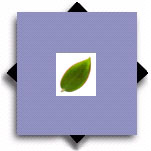

|
PlotQuery
Web-based Vegetation Science Information |
| Overview |
| Underlying Databases |
see also:
|
The National Plots Database website is hosted by

|  |
|
||||
|
| |||||
see also: |
<
| ||||
| |||||
|
The National Plots Database website is hosted by
|
|||||